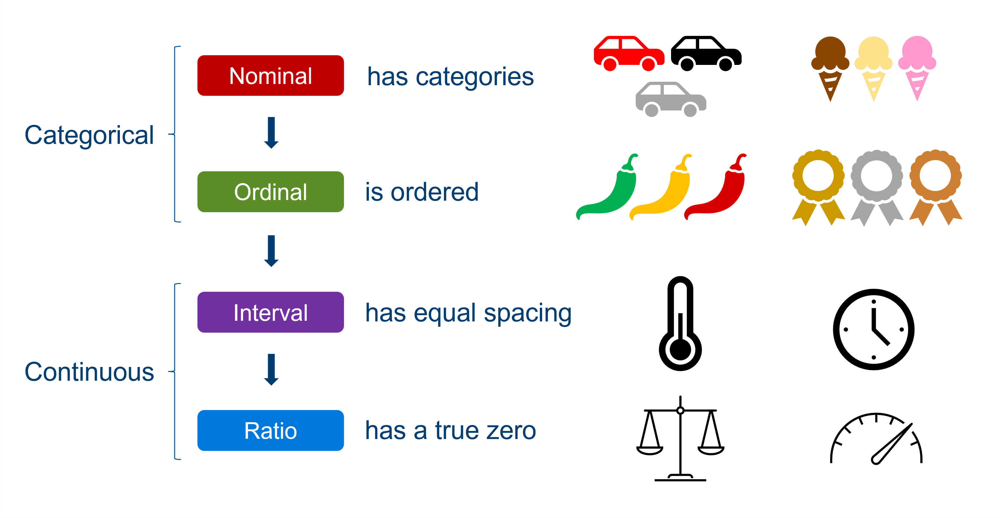
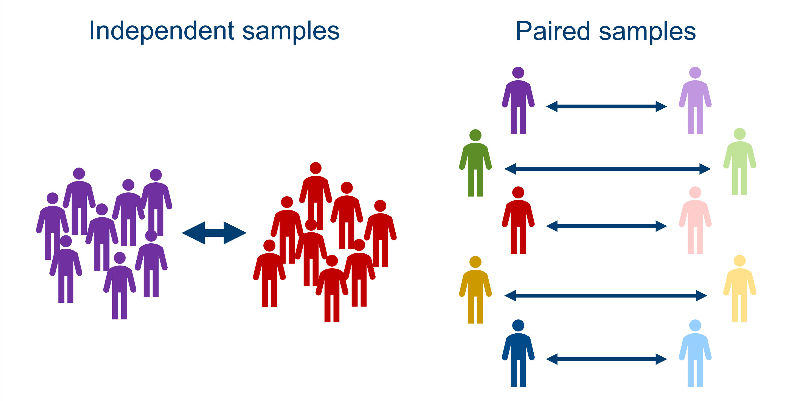
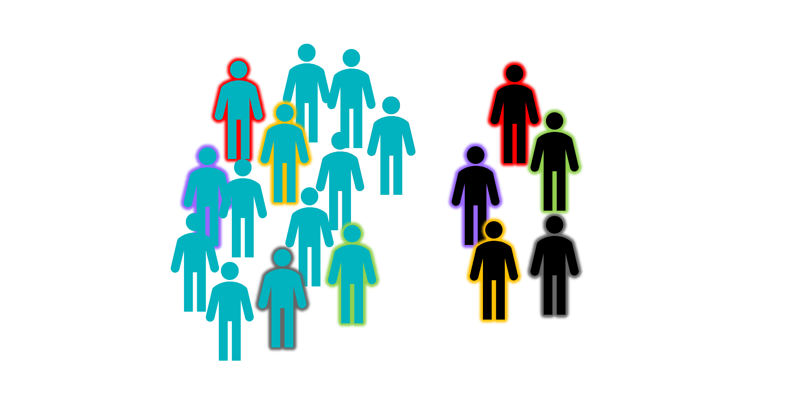

8 Variables and data types
One of the important factors in helping us to choose a statistical test, is the type of data that you are analysing. This section of the course materials gives a brief overview of the sampling and variable types that you might find in your dataset, and how to recognise the difference between them. The rest of the course will help you decide what to do with that knowledge.
8.1 Categorical vs continuous variables
So far in the materials you’ve worked through, you’ve actually encountered both categorical and continuous variables.
Take the fish length length ~ river from the section on two-sample data. The river variable is an example of a categorical variable. There are two discrete options, Guanapo or Aripo, with nothing in between, and a fish can only come from one of the two rivers. A categorical variable, then, is one that only has a discrete set of outcomes. There can be as many categories as we like (within reason) so long as it is some finite number, and each observation must belong to just one of those categories.
Meanwhile, fishlength variable is a continuous variable - the exact length of each fish can take any value along a range (with some sensible/realistic maximum and minimum, in this case). In theory, there an infinite number of exact lengths that a fish can be, although of course a human observer won’t have a tool that can measure beyond a certain length of precision.
This coarse distinction between categorical and continuous variables is pretty important for the course. But for those who want a bit of extra information about variable types, we can actually be a little more detailed.
Nominal, ordinal, interval and ratio data
Another set of descriptors you’ll sometimes see applied to variables is nominal, ordinal, interval and ratio. Helpfully, these actually map onto the categorical and continuous types, as shown below.

You can think about each of these data types as “adding a feature” to the previous one.
Nominal data are categorical in the simplest way: there are a bunch of groups. Examples include colour, flavour, degree subject, which river you found the fish in, and so on.
Ordinal data still have groups, making them still categorical, but have the added feature of a meaningful order to those categories. Examples include spice level or where you placed in a running race. In a research context, a common souce of ordinal data is survey questions, where participants rate things on a scale of “agree to disagree” or “between 1 and 10”. We have a specific way of dealing with this sort of variable in R - they are treated as factors, which are categorical variables where a specific order is preserved. We refer to the groups/categories as “levels” of the factor, and specify the order they should go in.
Now, we cross over into continuous data. A variable is an example of interval data if there are equal spaces between the values, or a consistent scale. Examples include temperature, time, or credit score. Importantly, a rating of 1 to 10 wouldn’t qualify as interval data, because although the values appear to be numerical, they actually represent categories, and there is no way of being sure that the difference between a rating of 4 and 5 is equivalent to the difference between 8 and 9.
Finally, we have ratio data. Now, the distinction between interval and ratio data is very subtle. The only difference between them is that a ratio variable has a true zero, which makes it meaningful for us to talk about something being “twice as heavy” or “half the speed”. Compare this to telling the time on a 12-hr clock. Although there are consistent intervals of seconds, minutes and hours, 6 o’clock is not “twice as time” as 3 o’clock - time is an interval variable. (Now, of course, if you were measuring time taken for something to happen, that would start at zero, and would qualify as ratio data!)
Don’t worry if that last bit feels a bit too nuanced or specific - interval/ratio data are treated exactly the same in statistical contexts, and it’s really not essential to wrap your head around it. Suffice it to say, continuous data requires us to have equal spacing, and often there will also be some true zero in there as well.
8.2 Independent vs paired samples
You’ve already encountered the distinction between independent and paired samples in this course, when looking at different types of t-tests. Here, we’ll review that distinction more explicitly, and think about the reasons why we might choose these different approaches from an experimental design perspective.
Independent samples
This means that a separate group undergoes each of the experimental conditions. In other words, the datapoints in each of your categories represent a completely different set of biological units or samples.
In lots of cases, you won’t have a choice to collect anything other than independent samples, because you don’t always get to assign the biological units/samples to the conditions as an experimenter. If you’re comparing patients to controls in a clinical study, for instance, or plants from two different species, they will be “pre-assigned” by nature, and cannot belong to both categories.
Sometimes you do get to decide, though, and will still choose to collect independent samples. The primary reason for doing so is that having separate groups undertake the different conditions guarantees that those conditions can’t affect one another. For instance, if you’re testing the outcomes of different drugs, you may want a completely different set of people for each new drug, since giving multiple drugs to the same people could make it difficult to detect their individual efficacy if they have interacting effects.
Paired samples
This means that the same group undergoes each condition, and the group is therefore compared to itself.
Paired sampling usually occurs when you want to compare the same individuals or samples across multiple time points, e.g., if measuring improvement after a treatment.
One of the major advantages of paired sampling is that matching of samples between conditions is perfect, because individuals are matched directly to themselves. This is useful in situations where you have unusual or extreme individuals; if you have a quirky person in your psychology study, they will bring their quirkiness to all of the conditions, and so you can factor out that quirkiness when comparing the conditions. This innate matching is a strength of paired sampling that you don’t get with independent samples (but see below for some discussion of matched pairs designs).
Another advantage of paired samples is that you typically need fewer unique samples or participants in your study, and so it can be easier to collect the data.
However, as discussed above, using the same biological units can cause “contamination” between conditions, introducing unexpected interactions or bias; or, if you’re testing on humans or animals, they may get tired or bored and not participate as effectively as time goes on. So, there are plenty of situations where using paired samples wouldn’t be appropriate.

In summary: the pros of one approach are the cons of the other. You may well find that the nature of your research makes the decision for you, in which case your main job is identifying which type of sampling you have, and using the appropriate statistical test. However, if you’re in a situation where you get to choose, it’s worth thinking carefully about which of these methods will give you the most confidence about your conclusions.
As discussed above, one of the problems with independent sampling is that you may end up with mismatched groups, and it can be difficult to tell whether differences between the groups are truly due to the predictor variable(s) of interest, or were already present. One way to offset this is by using a matched pairs design, to ensure that your groups are as similar to one another as possible.
This is perhaps most common in clinical studies, where researchers want to compare a patient group to some healthy controls. In order to make sure that the comparison is useful, the healthy controls ought to be matched in terms of demographic variables like age, sex, perhaps educational background or socioeconomic status and so on. To make this matching as precise as possible, the construction of matched pairs may occur, where for each patient, a control is selected who matches that patient as closely as possible on all those demographic variables.

This does eliminate some of the unwanted confounding variables (more on confounds later in the course), but as you can imagine, is also quite time consuming for the researcher.
8.3 Summary
- Variables can be categorical, with distinct groups, or continuous, taking any value along a range
- Categorical variables can take the form of nominal or ordinal data, depending on whether there is an order to the categories
- Continuous variables can be either interval or ratio data, depending on whether there is a “true” zero
- Samples can be independent, with different samples taking part in each group, or paired, where the same group undergoes each condition
- The categorical vs continuous and independent vs paired distinctions both have implications for choosing statistical tests